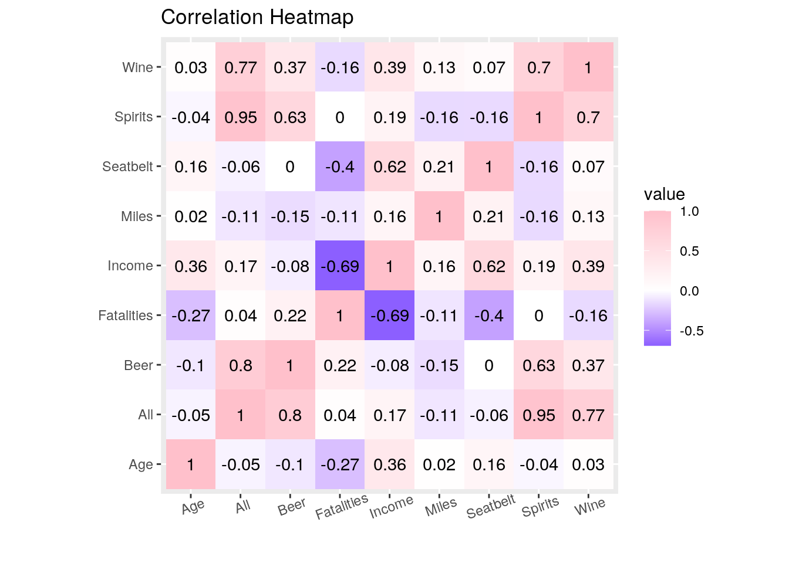
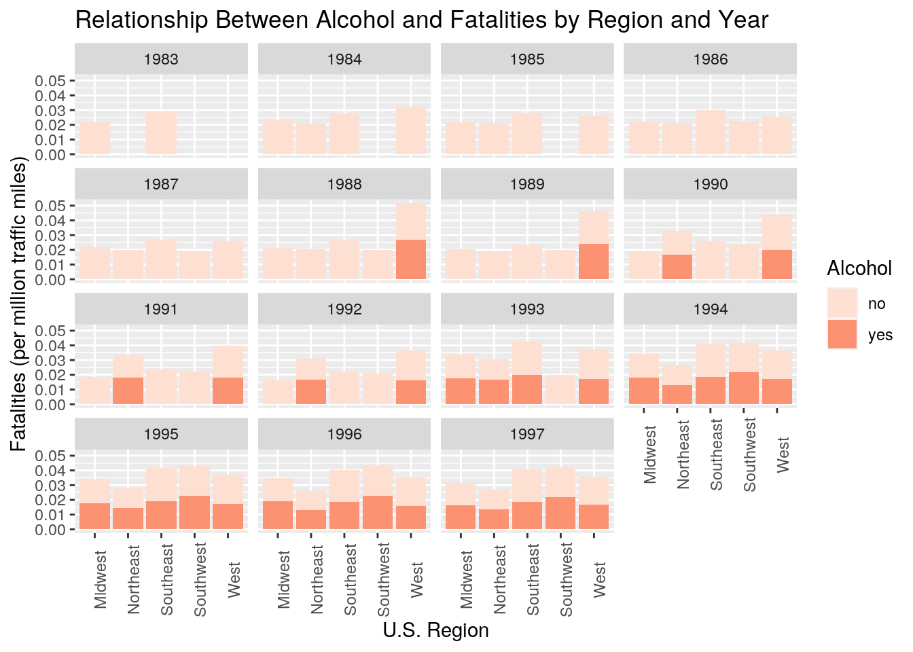
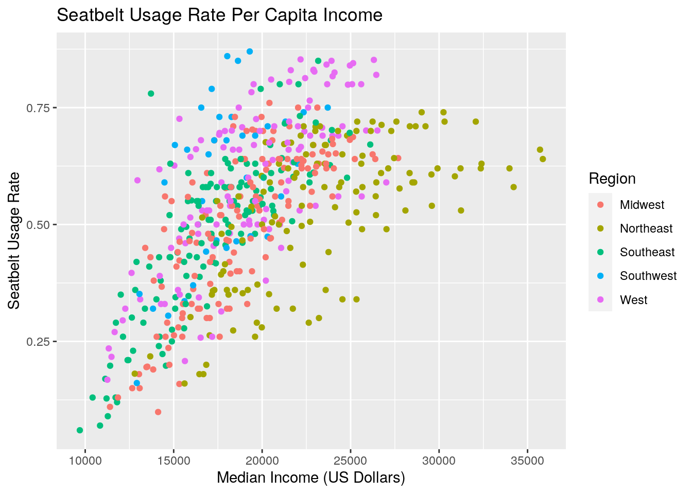
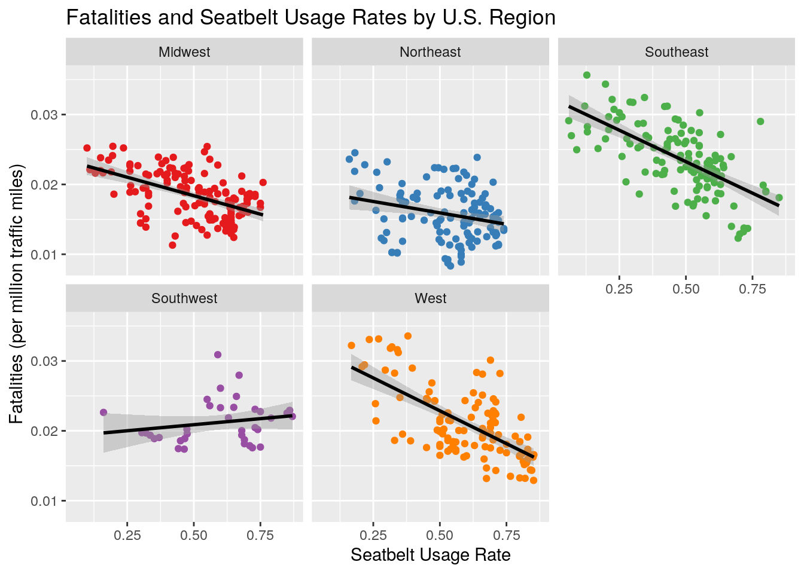
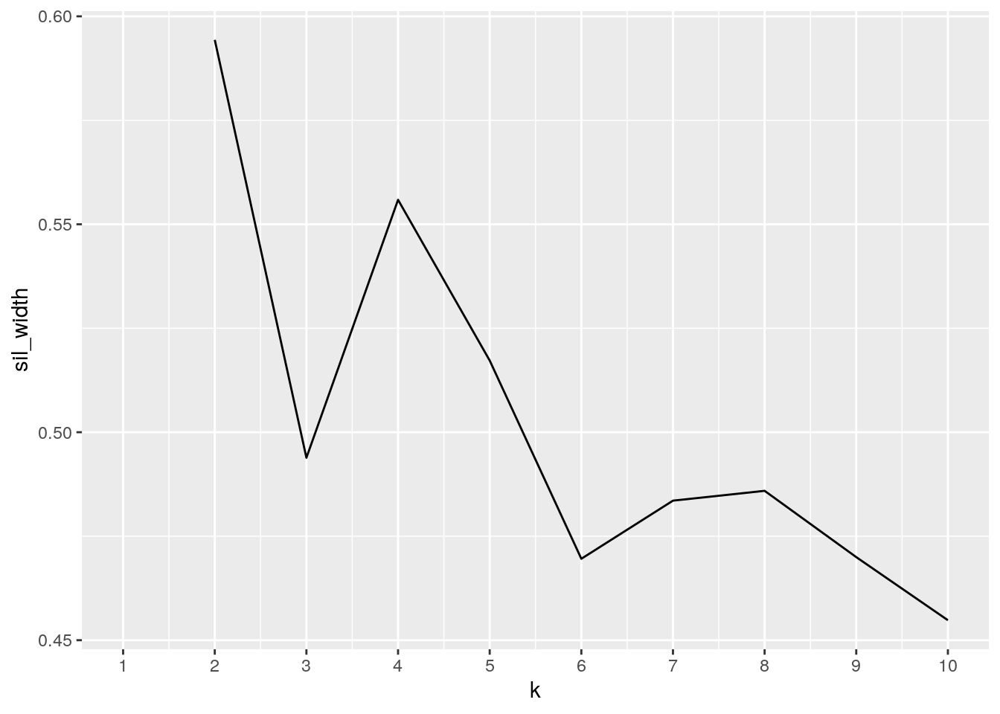
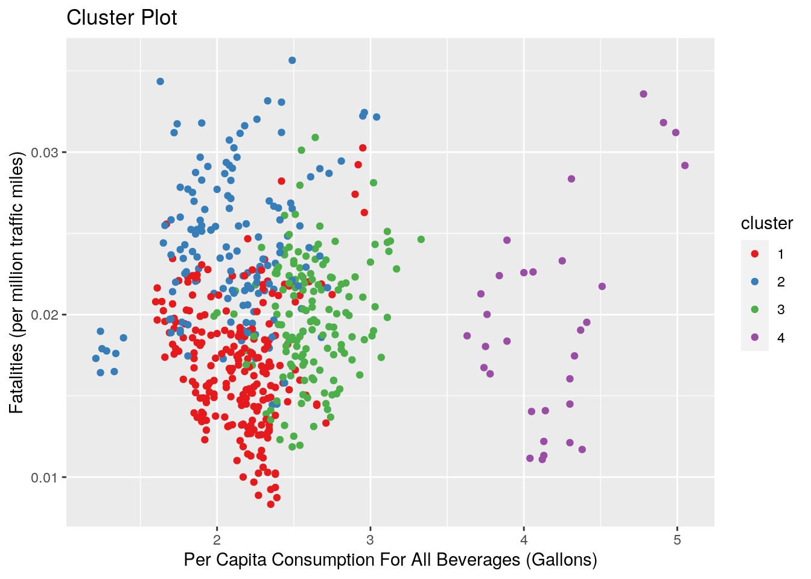
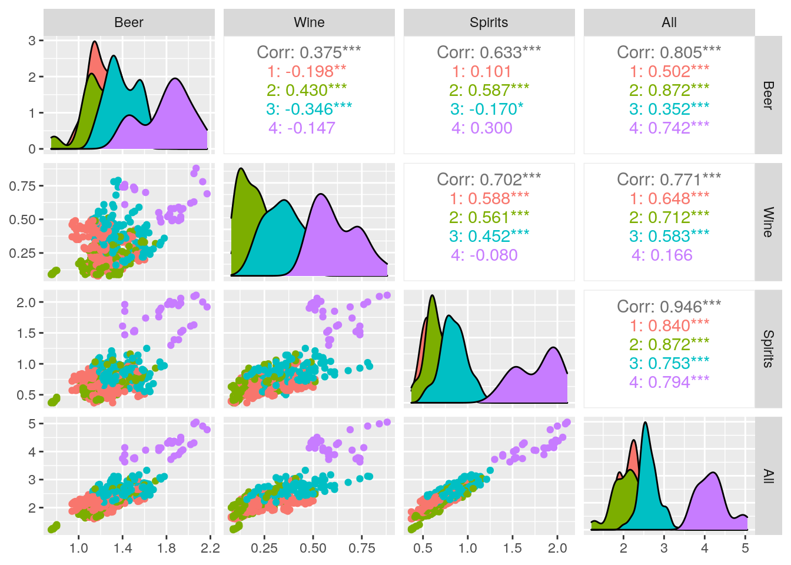

library(AER)
data("USSeatBelts")
library(readr)
Consumption_Alcohol <- read_csv("Consumption_Alcohol.csv", col_types = cols(Beer = col_number(),
Wine = col_number(), Spirits = col_number(), `All beverages` = col_number()))
library(tidyverse)
library(dplyr)When starting this project, I wanted to choose a topic that was important to me. In exploring the datasets in R, I found the USSeatBelts dataset. This dataset looks at traffic fatalities and seat belt usage for the years 1983–1997 for states in the U.S. I wanted to find a way to expand on this data in a meaningful way so I began googling information on alcohol consumption in the United States. In order for the data to better line up, I also wanted to make sure each data reported on similar years. I then found the Consumption_Alcohol dataset from the National Institute on Alcohol Abuse and Alcoholism. This dataset looks at per capita ethanol consumption for all states from 1997-2009 for a range of beverages. In joining these two datasets together, I aim to find how alcohol consumption relates to fatalities, seatbelt usage rates, income, and a range of other variables in the dataset.
alcrates <- Consumption_Alcohol %>% rename(State.Year = "State or other\ngeographic area",
U.S._decile = "U.S. decile for all beverages\n", All = "All beverages")
alcrates <- alcrates %>% select(-U.S._decile) %>% pivot_wider(names_from = "State.Year",
values_from = c("Beer", "Wine", "Spirits", "All"))
alcrates <- alcrates %>% pivot_longer(contains("_")) %>% separate(name,
into = c("Alcohol", "state"), sep = "_") %>% separate(state,
into = c("State", "Year"))
alcrates <- alcrates %>% pivot_wider(names_from = "Alcohol",
values_from = "value")
alcrates## # A tibble: 1,683 x 6
## State Year Beer Wine Spirits All
## <chr> <chr> <dbl> <dbl> <dbl> <dbl>
## 1 Alabama 2009 1.2 0.22 0.580 2.01
## 2 Alabama 2008 1.24 0.22 0.580 2.04
## 3 Alabama 2007 1.24 0.22 0.56 2.02
## 4 Alabama 2006 1.22 0.21 0.55 1.97
## 5 Alabama 2005 1.18 0.2 0.53 1.91
## 6 Alabama 2004 1.19 0.2 0.52 1.9
## 7 Alabama 2003 1.18 0.19 0.52 1.89
## 8 Alabama 2002 1.18 0.21 0.53 1.92
## 9 Alabama 2001 1.16 0.17 0.53 1.86
## 10 Alabama 2000 1.19 0.18 0.51 1.88
## # … with 1,673 more rowsThe Consumption_Alcohol dataset had one column for state and year so I attempted to make it tidy by splitting the two up into distinct columns for year and state using pivot_wider. I then used pivot_longer to give each variable its own column and got rid of the U.S._decile column as this information was not useful for this project.
key <- read_csv("https://raw.githubusercontent.com/jasonong/List-of-US-States/master/states.csv")
newkey <- key %>% mutate(new.state = str_replace(State, " ",
""))
newkey2 <- newkey %>% mutate(new.state2 = str_replace(new.state,
" ", ""))
newkey2 <- newkey2 %>% select(-State, -new.state)
newrates <- full_join(newkey2, alcrates, by = c(new.state2 = "State"))
fulldata <- full_join(newrates, USSeatBelts, by = c(Abbreviation = "state",
Year = "year"))
fulldata2 <- fulldata %>% na.omit() %>% select(c(-new.state2,
-speed65, -speed70))
fulldata2## # A tibble: 556 x 14
## Abbreviation Year Beer Wine Spirits All miles fatalities seatbelt
## <chr> <chr> <dbl> <dbl> <dbl> <dbl> <dbl> <dbl> <dbl>
## 1 AL 1997 1.14 0.15 0.52 1.81 53458 0.0223 0.520
## 2 AL 1996 1.17 0.15 0.53 1.86 51433 0.0223 0.540
## 3 AL 1995 1.14 0.15 0.53 1.81 50628 0.0220 0.520
## 4 AL 1994 1.16 0.17 0.54 1.87 48956 0.0221 0.550
## 5 AL 1993 1.14 0.17 0.56 1.86 47337 0.0221 0.550
## 6 AL 1992 1.02 0.19 0.59 1.79 45762 0.0225 0.580
## 7 AL 1991 1 0.17 0.59 1.76 42924 0.0260 0.470
## 8 AL 1990 1.12 0.18 0.61 1.92 42347 0.0265 0.440
## 9 AL 1989 1.1 0.17 0.6 1.87 40765 0.0252 0.380
## 10 AL 1988 1.1 0.18 0.61 1.89 39684 0.0258 0.290
## # … with 546 more rows, and 5 more variables: drinkage <fct>, alcohol <fct>,
## # income <dbl>, age <dbl>, enforce <fct>I did a full join on this dataset as I wanted to keep all the variables and did not want to drop any from the join. In order to join by states, I had to do a separate join so that state names would be abbreviated. After the state names were abbreviated, I could join the two datasets together. I also joined by year so that the datasets would be merged by the two variables they had in common. I then removed information that wasn’t useful for this project such as the speed variables which only said whether or not there was a 65 or 70 mile per hour speed limit.
library(tidyverse)
library(dplyr)
fulldata3 <- fulldata2 %>% rename(State = "Abbreviation", Miles = "miles",
Fatalities = "fatalities", Seatbelt = "seatbelt", DrinkingAge = "drinkage",
Alcohol = "alcohol", Income = "income", Age = "age", Enforcement = "enforce")
fulldata3 %>% filter(Alcohol == "yes") %>% filter(All == max(All)) %>%
select(State, All, Year, Fatalities, Seatbelt)## # A tibble: 2 x 5
## State All Year Fatalities Seatbelt
## <chr> <dbl> <chr> <dbl> <dbl>
## 1 NH 4.13 1996 0.0122 0.560
## 2 NH 4.13 1994 0.0113 0.537fulldata3 %>% filter(Alcohol == "no") %>% filter(All == min(All)) %>%
select(State, All, Year, Fatalities, Seatbelt)## # A tibble: 1 x 5
## State All Year Fatalities Seatbelt
## <chr> <dbl> <chr> <dbl> <dbl>
## 1 WV 1.6 1997 0.0208 0.580RegionsData <- fulldata3 %>% dplyr::mutate(Region = recode(State,
AZ = "Southwest", NM = "Southwest", OK = "Southwest", TX = "Southwest",
WA = "West", OR = "West", ID = "West", NV = "West", UT = "West",
CA = "West", AK = "West", HI = "West", CO = "West", WY = "West",
MT = "West", ND = "Midwest", SD = "Midwest", NE = "Midwest",
KS = "Midwest", MN = "Midwest", WI = "Midwest", MI = "Midwest",
IA = "Midwest", IL = "Midwest", MO = "Midwest", IN = "Midwest",
OH = "Midwest", AR = "Southeast", TN = "Southeast", LA = "Southeast",
MS = "Southeast", AL = "Southeast", GA = "Southeast", FL = "Southeast",
KY = "Southeast", WV = "Southeast", VA = "Southeast", NC = "Southeast",
SC = "Southeast", PA = "Northeast", MD = "Northeast", DC = "Northeast",
DE = "Northeast", NJ = "Northeast", CT = "Northeast", RI = "Northeast",
NY = "Northeast", MA = "Northeast", NH = "Northeast", ME = "Northeast",
VT = "Northeast"))
fulldata3 %>% group_by(State) %>% summarize(mean = mean(All),
sd = sd(All), count = n(), se = sd/sqrt(count), variation = var(All),
median = median(All))## # A tibble: 51 x 7
## State mean sd count se variation median
## <chr> <dbl> <dbl> <int> <dbl> <dbl> <dbl>
## 1 AK 2.89 0.286 8 0.101 0.0816 2.94
## 2 AL 1.86 0.0483 14 0.0129 0.00233 1.87
## 3 AR 1.75 0.0871 10 0.0275 0.00758 1.74
## 4 AZ 2.59 0.126 8 0.0445 0.0158 2.6
## 5 CA 2.62 0.351 13 0.0974 0.123 2.54
## 6 CO 2.53 0.0794 8 0.0281 0.00631 2.54
## 7 CT 2.25 0.103 8 0.0365 0.0107 2.21
## 8 DC 3.84 0.173 8 0.0611 0.0298 3.77
## 9 DE 2.76 0.0949 8 0.0335 0.00900 2.76
## 10 FL 2.77 0.195 13 0.0540 0.0378 2.75
## # … with 41 more rowsfulldata3 %>% group_by(State, Year) %>% summarize(mean_rank = mean(All,
na.rm = T)) %>% arrange(desc(mean_rank))## # A tibble: 556 x 3
## # Groups: State [51]
## State Year mean_rank
## <chr> <chr> <dbl>
## 1 NV 1986 5.05
## 2 NV 1987 4.99
## 3 NV 1988 4.91
## 4 NV 1990 4.78
## 5 NH 1986 4.51
## 6 NH 1987 4.41
## 7 NH 1993 4.38
## 8 NH 1989 4.37
## 9 NH 1988 4.33
## 10 NV 1991 4.31
## # … with 546 more rowsfulldata3 %>% group_by(Year) %>% summarize_if(is.numeric, mean)## # A tibble: 15 x 10
## Year Beer Wine Spirits All Miles Fatalities Seatbelt Income Age
## <chr> <dbl> <dbl> <dbl> <dbl> <dbl> <dbl> <dbl> <dbl> <dbl>
## 1 1983 1.33 0.183 0.71 2.22 37156. 0.0243 0.100 10982. 34.5
## 2 1984 1.28 0.304 0.846 2.43 44776. 0.0248 0.150 13000. 34.8
## 3 1985 1.32 0.347 0.889 2.55 46600. 0.0242 0.236 14018. 34.8
## 4 1986 1.35 0.373 0.887 2.61 43157. 0.0246 0.337 14669. 34.9
## 5 1987 1.35 0.359 0.88 2.59 47776. 0.0235 0.402 15609. 35.0
## 6 1988 1.36 0.354 0.836 2.54 47933. 0.0232 0.449 16400. 35.1
## 7 1989 1.29 0.311 0.775 2.38 51604. 0.0210 0.464 17591. 35.3
## 8 1990 1.37 0.307 0.83 2.50 42108. 0.0212 0.469 18263. 35.2
## 9 1991 1.33 0.283 0.772 2.38 42396. 0.0198 0.531 18799. 35.3
## 10 1992 1.32 0.285 0.766 2.37 43918. 0.0183 0.568 19730. 35.4
## 11 1993 1.30 0.27 0.737 2.31 45031. 0.0182 0.595 20435. 35.6
## 12 1994 1.29 0.269 0.716 2.28 46274. 0.0177 0.622 21284. 35.7
## 13 1995 1.27 0.275 0.694 2.23 47505. 0.0179 0.634 22207. 35.8
## 14 1996 1.27 0.287 0.689 2.24 48671. 0.0174 0.633 23301. 36.0
## 15 1997 1.26 0.289 0.683 2.23 50203. 0.0172 0.648 24327. 36.1fulldata3 %>% summarize_if(is.numeric, mean)## # A tibble: 1 x 9
## Beer Wine Spirits All Miles Fatalities Seatbelt Income Age
## <dbl> <dbl> <dbl> <dbl> <dbl> <dbl> <dbl> <dbl> <dbl>
## 1 1.31 0.299 0.766 2.37 46134. 0.0198 0.529 19572. 35.5I first renamed all the variables so that the dataset would look cleaner. I then filtered for when there was a maximum of 0.08 blood alcohol content to find which state had the maximum alcohol consumption for all beverages. That state was New Hampshire which had 0.0122 fatalities in 1996. I then filtered by when there wasn’t a maximum of 0.08 blood alcohol content to find the state that had the least consumption which was West Virginia. Surprisingly this state had 0.0208 fatalities in 1997. This data was surprising as one year after New Hampshire, West Virginia which had lower alcohol consumption, had more fatalities. This result was not expected. I then used mutate to group each state by region in the U.S. to look more broadly at the areas. I also created summary statistics for each variable and found that out of all states, Nevada had the highest mean alcohol consumption in 1986. I also found that beer consumption was the highest for all alcohol groups which I found surprising and that the mean values of age did not differ much over the years as they generally were between 34-36.
fulldata3 %>% select_if(is.numeric) %>% cor %>% as.data.frame %>%
rownames_to_column %>% pivot_longer(-1) %>% ggplot(aes(rowname,
name, fill = value)) + geom_tile() + geom_text(aes(label = round(value,
2))) + xlab("") + ylab("") + coord_fixed() + theme(axis.text.x = element_text(angle = 20)) +
scale_fill_gradient2(low = "blue", mid = "white", high = "pink") +
ggtitle("Correlation Heatmap") As seen in the correlation heatmap, it is evident that income and seatbelt usage rates have a relatively strong correlation compared to other variables in this dataset. Income and fatalities have a relatively negative correlation. Additionally, wine and all beverage consumption have a strong correlation which is expected as the all beverages column encompasses wine.
ggplot(data = RegionsData, aes(x = Region, y = Fatalities, fill = Alcohol)) +
geom_bar(stat = "summary", fun = mean) + scale_fill_brewer(palette = "Reds") +
facet_wrap(~Year) + theme(axis.text.x = element_text(angle = 90)) +
ggtitle("Relationship Between Alcohol and Fatalities by Region and Year") +
ylab("Fatalities (per million traffic miles)") + xlab("U.S. Region") Exploring the data further, I generated a barplot that showed the number of fatalities in each U.S. region for each year. This graph also examined whether or not there was a maximum of 0.08 blood alcohol content. I expected there to be higher fatalities when the blood alcohol content exceeded 0.08 however it appears as though the data for “yes” and “no” is relatively equal. As the years progress following the 1980s, it appears as though there are a higher number of fatalities for the “yes” group. Additionally, up until 1991, the West had the highest number of fatalities and after 1991, the Southeast and Southwest regions began to have the highest number.
ggplot(data = RegionsData, aes(x = Income, y = Seatbelt, color = Region)) +
geom_point() + scale_x_continuous(breaks = seq(5000, 40000,
5000)) + ggtitle("Seatbelt Usage Rate Per Capita Income") +
ylab("Seatbelt Usage Rate") + xlab("Median Income (US Dollars)") This scatterplot demonstrates that seatbelt usage rates increase with increasing per capita income for all regions in the United States. This logically makes sense as individuals with higher income are more likely to receive higher education that might warn them of the dangers of driving without a seatbelt. Additionally, seatbelt usage rate is self reported so maybe those individuals with higher incomes were more likely to report their self data.
ggplot(data = RegionsData, aes(x = Seatbelt, y = Fatalities,
color = Region)) + geom_point() + geom_smooth(method = "lm",
color = "black") + scale_color_brewer(palette = "Set1") +
facet_wrap(~Region) + theme(legend.position = "none") + ggtitle("Fatalities and Seatbelt Usage Rates by U.S. Region") +
ylab("Fatalities (per million traffic miles)") + xlab("Seatbelt Usage Rate") This graph looks at seatbelt usage rates compared to fatalities for each region in the U.S. Each region except for the Southwest demonstrates a clear negative linear relationship between the two variables. This shows that for the majority of states, the number of fatalities increases as the use of seatbelts decreases. Higher seatbelt usage rates indicate lower fatalities.
library(cluster)
pam_dat <- fulldata3 %>% select(c(-State, -Year, -DrinkingAge,
-Alcohol, -Enforcement))
sil_width <- vector()
for (i in 2:10) {
pam_fit <- pam(pam_dat, k = i)
sil_width[i] <- pam_fit$silinfo$avg.width
}
ggplot() + geom_line(aes(x = 1:10, y = sil_width)) + scale_x_continuous(name = "k",
breaks = 1:10)
pam2 <- fulldata3 %>% select(c(-State, -Year, -DrinkingAge, -Alcohol,
-Enforcement)) %>% scale %>% pam(4)
pam2## Medoids:
## ID Beer Wine Spirits All Miles Fatalities
## [1,] 428 0.01208833 -0.5266494 -0.6505406 -0.4922169 0.32279695 -0.20181335
## [2,] 159 -0.31463234 -0.5266494 -0.3178200 -0.4222955 -0.04322281 0.82362900
## [3,] 60 0.38548338 0.3410556 0.3476212 0.4167621 -0.39502279 -0.03910941
## [4,] 268 2.53250490 1.2755072 4.0075476 3.3709441 -0.77951538 -0.73925648
## Seatbelt Income Age
## [1,] 0.53558019 0.6813353 0.7402621
## [2,] -0.95102923 -1.1864444 -0.4015762
## [3,] -0.11077184 0.1191024 -0.9011502
## [4,] -0.06728977 0.2612997 -0.3521024
## Clustering vector:
## [1] 1 1 1 1 2 2 2 2 2 2 2 2 2 2 3 3 3 3 3 3 3 3 1 3 3 3 3 3 3 3 1 1 2 2 2 2 2
## [38] 2 2 2 1 1 1 1 1 1 1 3 3 3 3 3 3 3 3 3 3 3 3 3 3 1 1 1 1 1 1 1 1 3 3 3 3 3
## [75] 3 3 3 4 4 4 4 4 4 4 4 1 1 1 1 1 1 1 1 1 1 1 2 2 1 1
## [ reached getOption("max.print") -- omitted 456 entries ]
## Objective function:
## build swap
## 2.185470 2.148928
##
## Available components:
## [1] "medoids" "id.med" "clustering" "objective" "isolation"
## [6] "clusinfo" "silinfo" "diss" "call" "data"pamclust <- pam_dat %>% mutate(cluster = as.factor(pam2$clustering))
pamclust %>% ggplot(aes(All, Fatalities, color = cluster)) +
geom_point() + scale_color_brewer(palette = "Set1") + ggtitle("Cluster Plot") +
ylab("Fatalities (per million traffic miles)") + xlab("Per Capita Consumption For All Beverages (Gallons)")
pamclust %>% group_by(cluster) %>% summarize_if(is.numeric, mean,
na.rm = T)## # A tibble: 4 x 10
## cluster Beer Wine Spirits All Miles Fatalities Seatbelt Income Age
## <fct> <dbl> <dbl> <dbl> <dbl> <dbl> <dbl> <dbl> <dbl> <dbl>
## 1 1 1.23 0.272 0.643 2.14 63081. 0.0170 0.634 22253. 36.3
## 2 2 1.23 0.202 0.663 2.10 31974. 0.0239 0.360 14984. 34.9
## 3 3 1.40 0.369 0.846 2.62 42240. 0.0198 0.538 19141. 34.7
## 4 4 1.80 0.62 1.77 4.19 8821. 0.0195 0.528 24067. 35.8library(GGally)
library(plotly)
ggpairs(pamclust, columns = 1:4, aes(color = cluster)) First, I found the number of clusters (k) to be used in this analysis by removing all the categorical variables from my dataset and then using the Silhouette Method. Using this method, 4 clusters was chosen. ALthough there was a higher value for 2, 4 clusters would likely provide more interesting data and this value had an average Silhouette width greater than 0.5 which can be interpreted as a reasonable cluster structure. Next, I looked at the Medoids of each numeric variable and the cluster summaries for each. I then generated a plot in order to visualize this cluster by looking at Fatalities and All Beverage Consumption as these two variables together showed the best cluster structure. This cluster plot is not weak, but also does not look very strong, as each cluster is relatively close to one another and the points within each are relatively far apart. It is also easier to see two distinct clusters rather than four. With that being said, it can be seen how the data naturally forms groups and observations are related to one another.